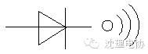
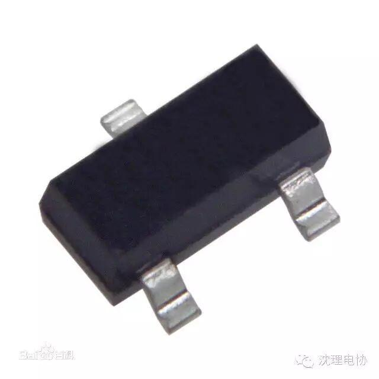

简介
三极管，全称应为半导体三极管，也称双极型晶体管、晶体三极管，是一种控制电流的半导体器件其作用是把微弱信号放大成幅度值较大的电信号， 也用作无触点开关。晶体三极管，是半导体基本元器件之一，具有电流放大作用，是电子电路的核心元件。

主要参数
1.特征频率fT
:当f= fT时,三极管完全失去电流放大功能.如果工作频率大于fT,电路将不正常工作.
2.电压/电流
用这个参数可以指定该管的电压电流使用范围.
3.hFE
电流放大倍数.
4.VCEO
集电极发射极反向击穿电压,表示临界饱和时的饱和电压.
5.PCM
最大允许耗散功率.
6.封装形式
指定该管的外观形状,如果其它参数都正确，封装不同将导致组件无法在电路板上实现.
